FMZ Strategy Library evidence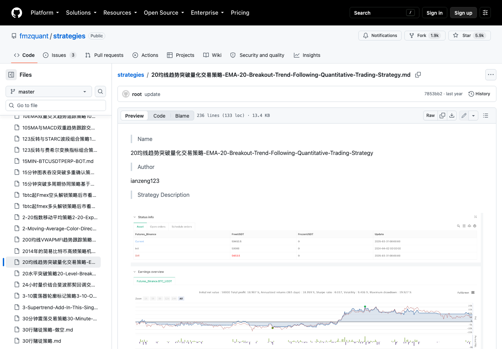
20均线趋势突破量化交易策略-EMA-20-Breakout-Trend-Following-Quantitative-Trading-Strategy
captured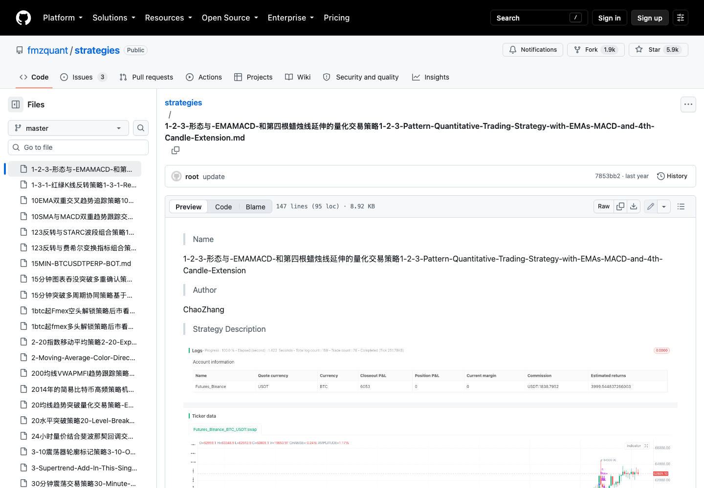
1-2-3-形态与-EMAMACD-和第四根蜡烛线延伸的量化交易策略1-2-3-Pattern-Quantitative-Trading-Strategy-with-EMAs-MACD-and-4th-Candle-Extension
captured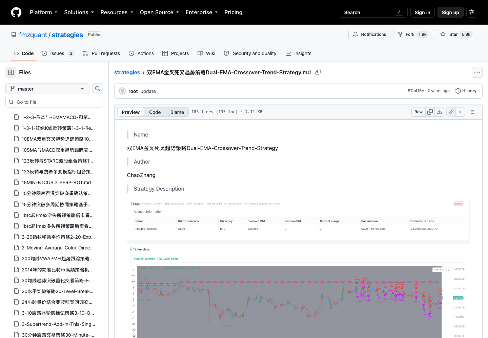
双EMA金叉死叉趋势策略Dual-EMA-Crossover-Trend-Strategy
captured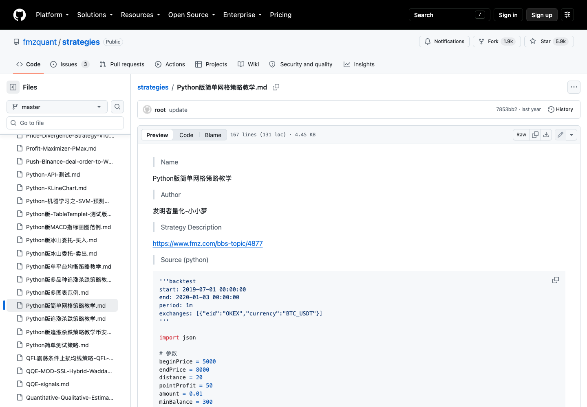
Python版简单网格策略教学
captured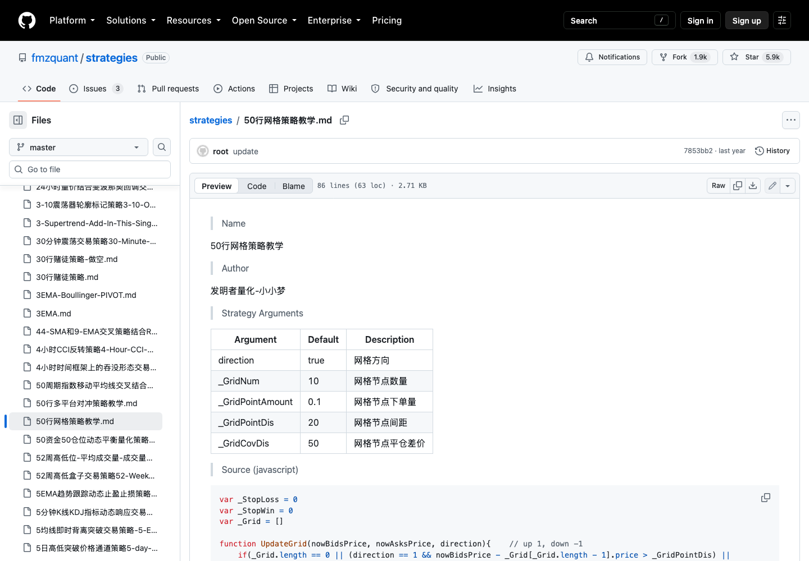
50行网格策略教学
captured60行三角对冲策略教学
captured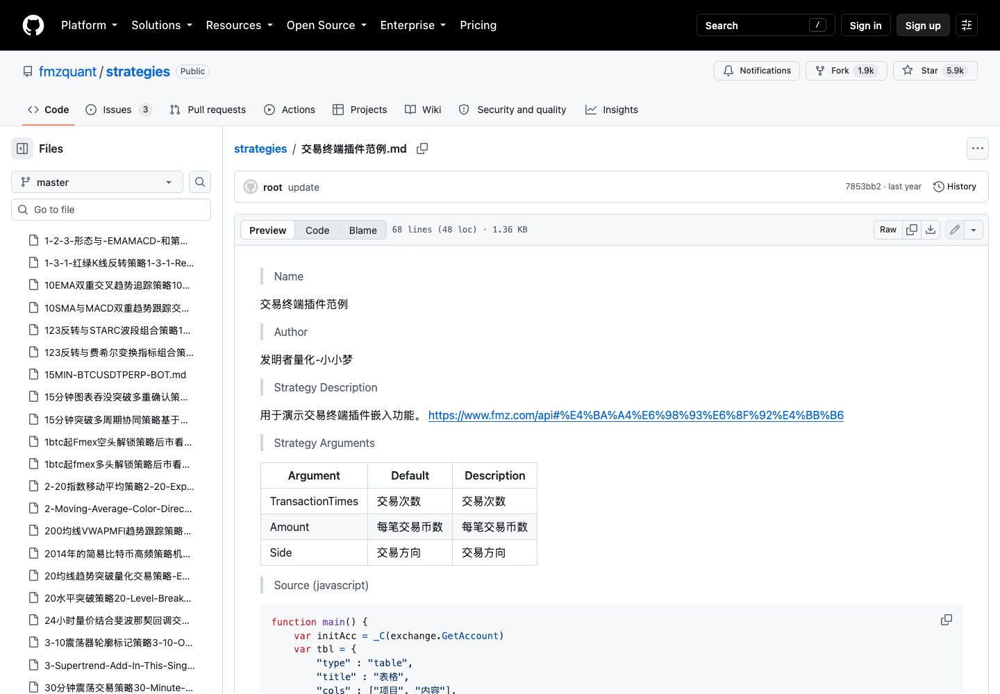
交易终端插件范例
captured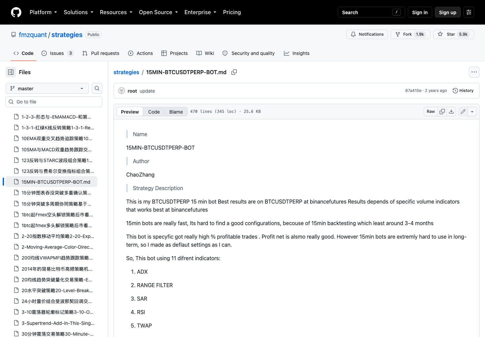
15MIN-BTCUSDTPERP-BOT
capturedADX-RSI策略ADX-RSI-Strategy
captured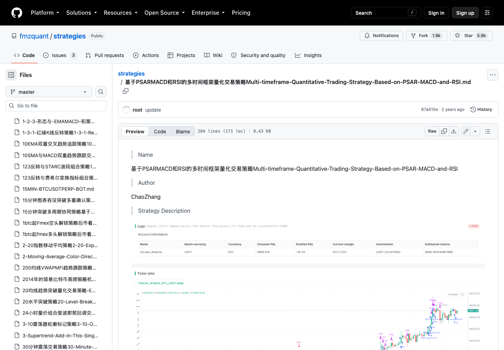
GitHub 多周期 PSAR-MACD-RSI 策略
captured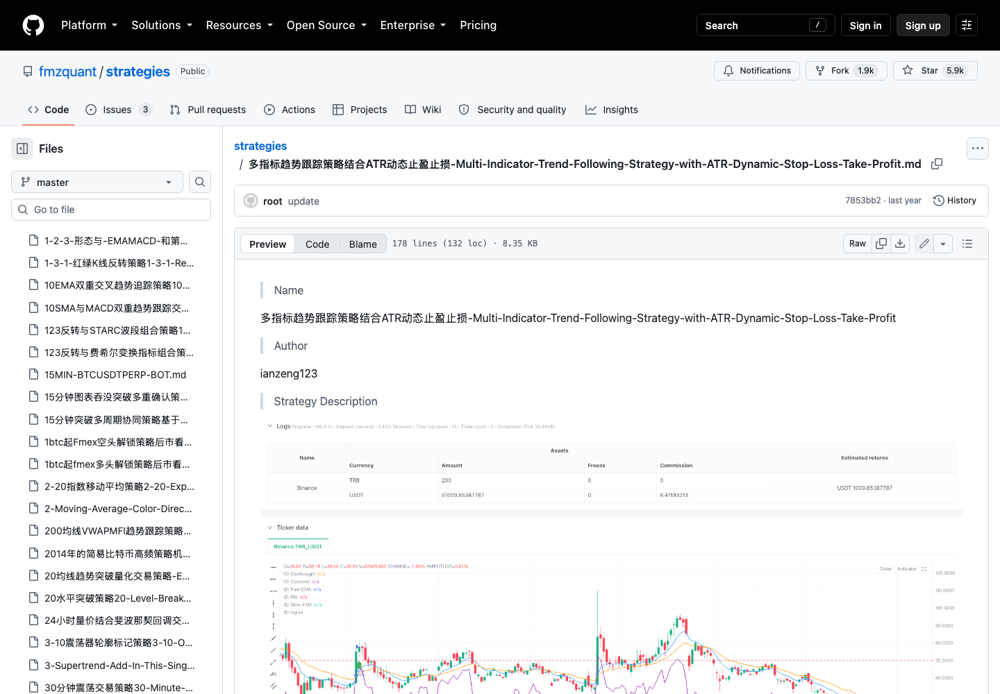
GitHub ATR 动态止盈止损策略
captured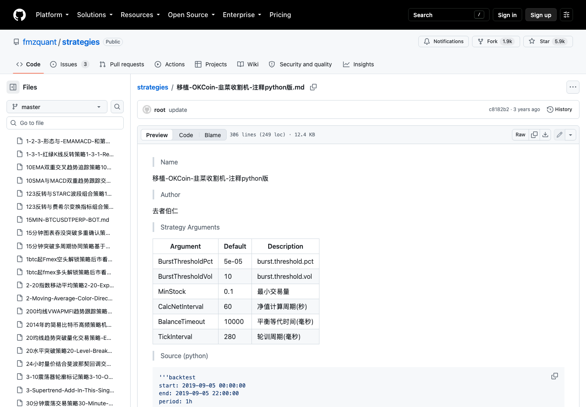
GitHub Python 移植策略
captured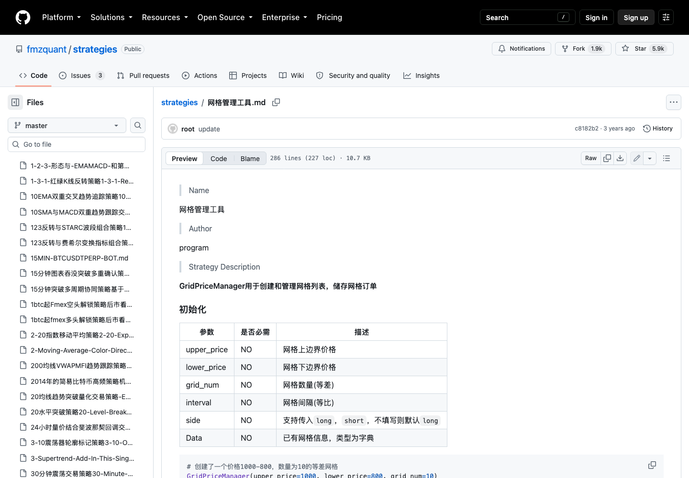
GitHub 网格策略管理工具
captured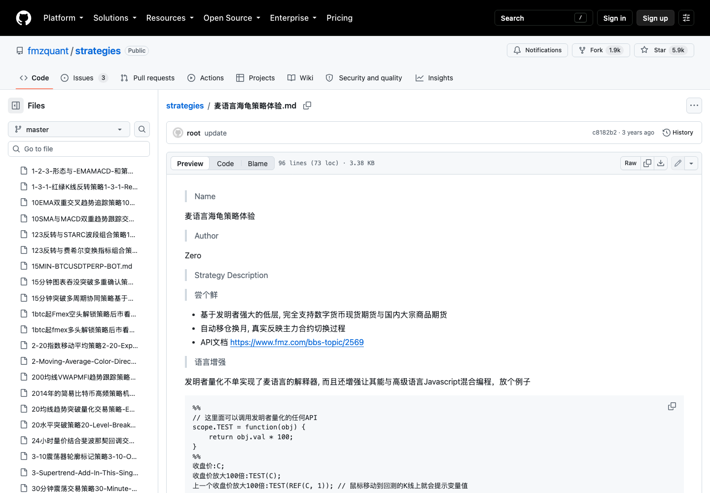
GitHub MyLanguage 海龟策略
captured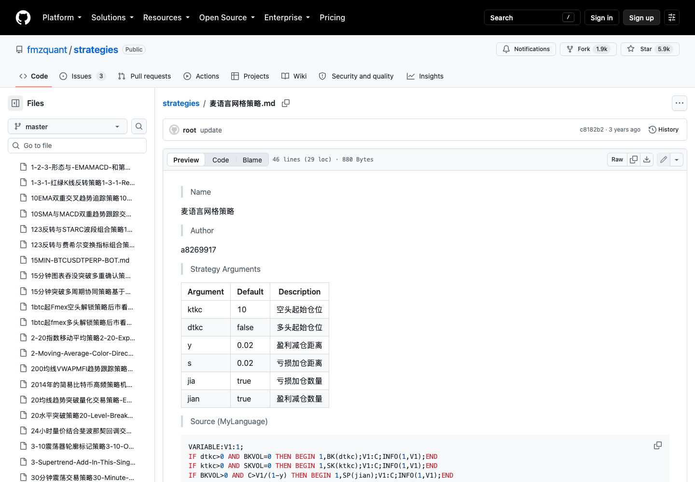
GitHub MyLanguage 网格策略
captured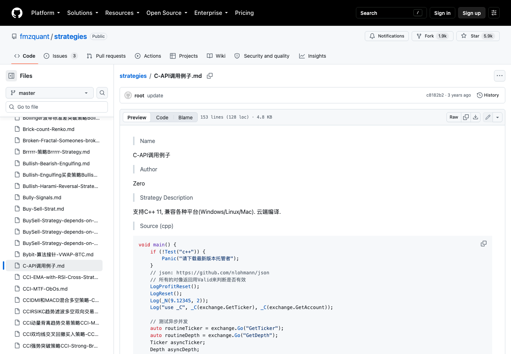
GitHub C API 示例
capturedGitHub C++ 高频策略
captured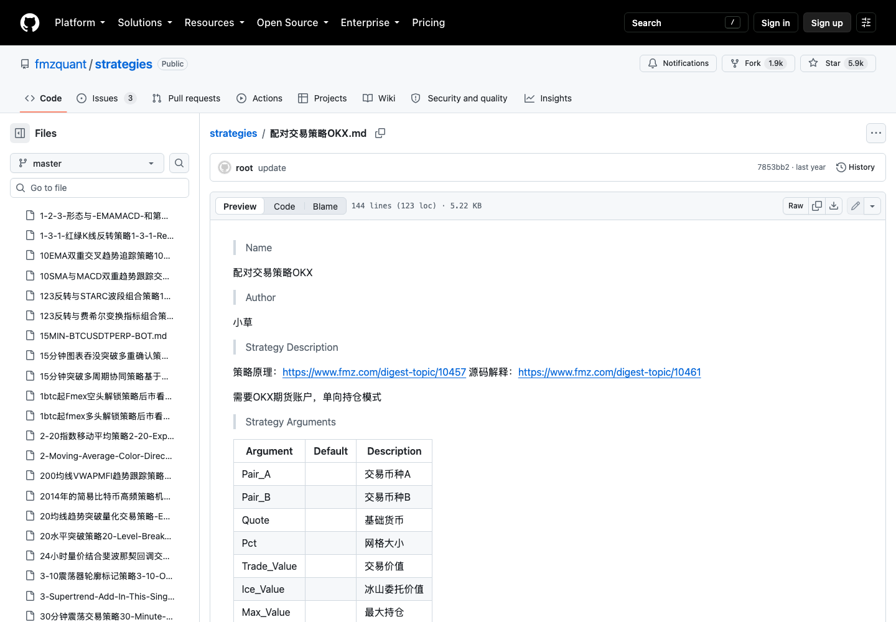
GitHub OKX 配对交易策略
capturedFMZ 原始公开策略页面 489157
capturedFMZ 原始公开策略页面 437017
captured